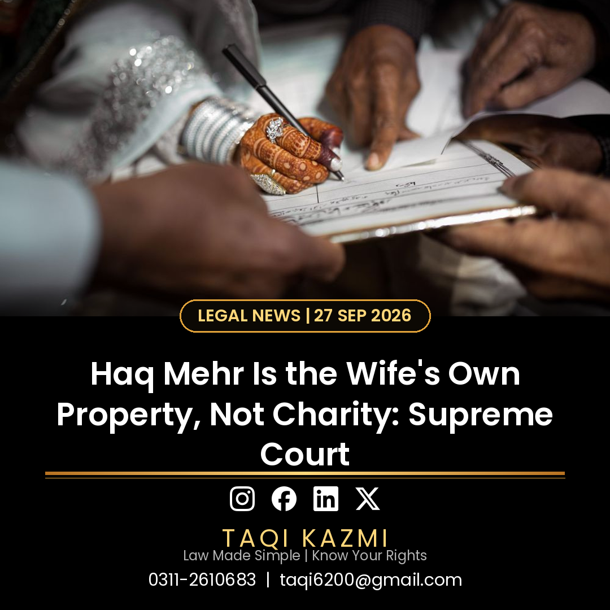

What the court decided
- The Supreme Court of Pakistan has ruled that Haq Mehr is the wife's mandatory legal right and her exclusive property. It is not the price of the wife, and it is not charity from the husband.
- A four-member bench headed by Justice Shahid Waheed held that no husband or relative can force a wife to give up her dower. Any remission must come from her free consent alone.
- The Court said the Nikahnama is official evidence of the agreed terms, and warned husbands against using dower as a weapon in later disputes: withholding it as leverage is coercion, not marriage.
The key legal point
A forced waiver of Haq Mehr has no legal standing. The dower vests in the wife as her own property at the time of the Nikah, and nobody can take it away from her by pressure or compulsion.
Urdu mein khulasa
Haq Mehr aap ki apni jayedad hai, shohar ki meherbani nahi, aur koi aap se ye haq zabardasti nahi chheen sakta. Agar aap ka Haq Mehr ada nahi hua to durust qanooni rehnumai ke liye rabta karein: 0311-2610683